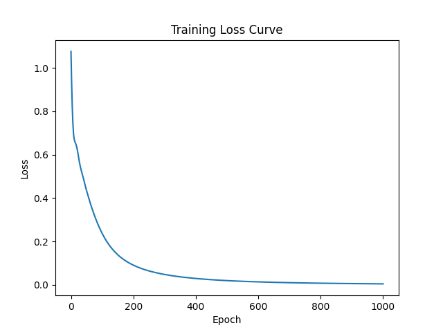
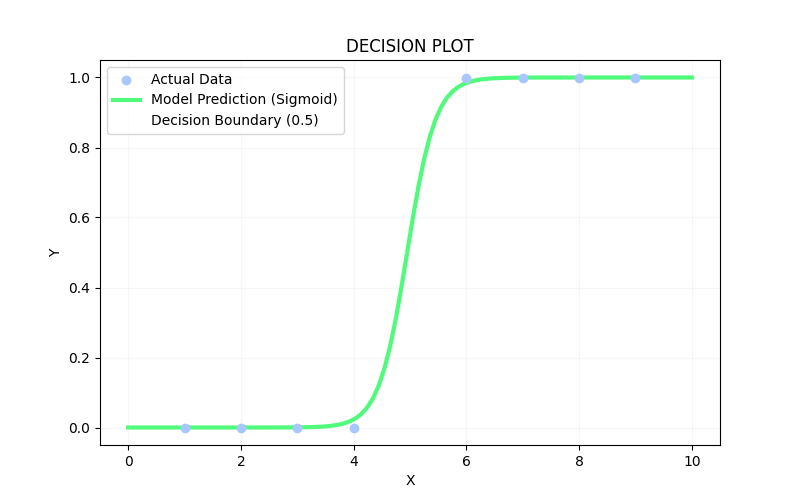

The leap from regression to classification. Moving past estimating "how much" to drawing clear probabilistic boundaries to decide between two distinct outcomes.
utils/ directory and packaged code into plotting.py to reuse visualization pipelines cleanly.nn.Sequential() to neatly cluster the layers into a single processing pipeline.nn.Sigmoid() layer to squeeze raw numbers into explicit $0.0$ to $1.0$ probabilities.nn.BCELoss) to aggressively punish confident, incorrect classification mistakes.5.0 hours) right in the dead-zone of our training data, netting a confident PASS prediction.The loss curve showed an incredibly violent cliff drop at the start driven by the aggressive logarithmic penalties of BCELoss, turning into a smooth, gradual crawl down to an error of 0.0049. This leveling out is caused by the flat geometries of the Sigmoid curve as the network approaches perfection. Because 5.0 hours sat directly between our raw sets, the model drew its decision fence right through it, leaning passing based purely on initial random weight parameters.
📊 Optimization Track (BCELoss Descent):

🔮 The Internal Map ( Sigmoid Decision Boundary ):
